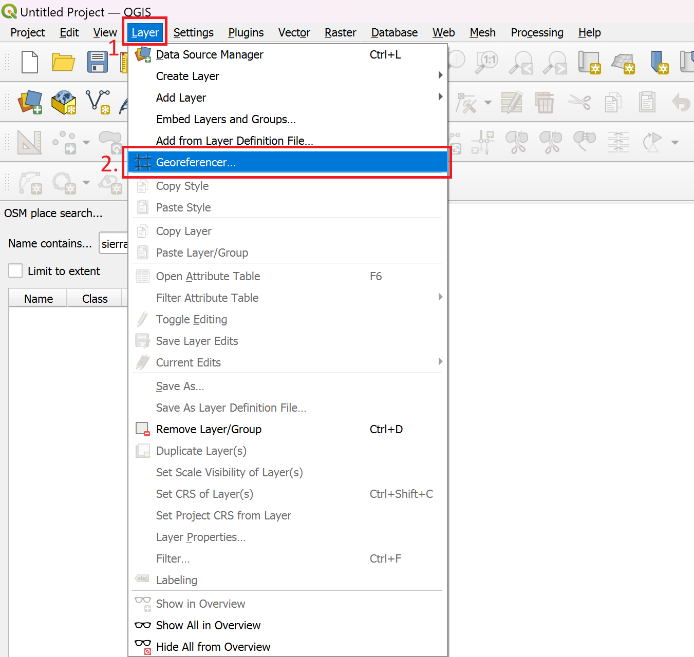
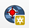
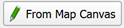
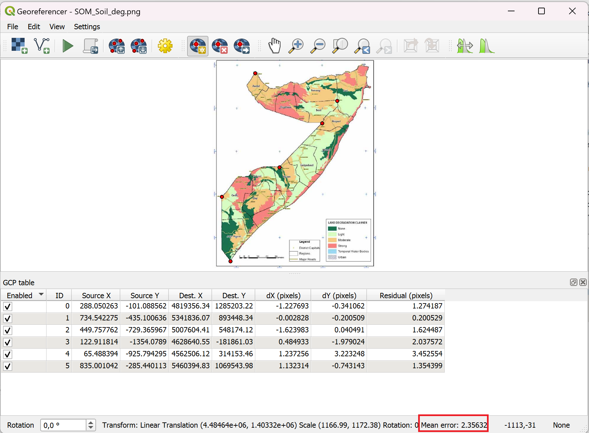

Ejercicio 7: Georreferenciación de un mapa de Somalia#
Objetivo del ejercicio:
El objetivo de este ejercicio es que aprenda a georreferenciar un mapa. En muchos casos, las instituciones (gubernamentales) solo publican datos o mapas en formato PDF. Sin embargo, al georreferenciar el mapa, es posible importarlo como un conjunto de datos ráster en el proyecto de QGIS. Luego, se puede usar para digitalizar entidades vectoriales o se pueden usar los valores de ráster en un análisis de datos ráster.
Tipo de ejercicio de capacitación
Este ejercicio puede utilizarse en la capacitación en línea y presencial.
Puede realizarse como ejercicio guiado o de forma individual como autoaprendizaje.
Estas habilidades son relevantes para
Digitalizar mapas
Preparar datos para el análisis espacial
Duración estimada del ejercicio
~ 90 minutos
Artículos relevantes
Instrucciones para capacitadores#
Rincón del instructor
Preparar la capacitación
Tómese el tiempo necesario para familiarizarse con el ejercicio y el material proporcionado.
Prepare un pizarrón. Puede ser una pizarra física, un rotafolio o una pizarra digital (p. ej., una pizarra en Miro) en la que los participantes puedan agregar sus resultados y preguntas.
Antes de comenzar el ejercicio, asegúrese de que todos hayan instalado QGIS y hayan descargado y descomprimido la carpeta de datos.
Consulte ¿Cómo hacer capacitaciones? para obtener consejos generales sobre cómo impartirlas.
Impartir la capacitación
Introducción:
Presente la idea y el objetivo del ejercicio.
Proporcione el enlace de descarga y asegúrese de que todos hayan descomprimido la carpeta antes de comenzar las tareas.
Guía paso a paso:
Muestre y explique cada paso al menos dos veces y de manera pausada para que todos puedan ver lo que está haciendo y aplicarlo en su propio proyecto de QGIS.
Pregunte con regularidad si alguien necesita ayuda o si todos están siguiendo el ejercicio, para asegurarse de que todos comprenden y realizan los pasos por sí mismos.
Mantenga una actitud abierta y paciente ante cualquier pregunta o problema que pueda surgir. Los participantes están haciendo varias tareas a la vez: prestan atención a sus instrucciones y las aplican en su propio proyecto de QGIS.
Cierre de la sesión:
Dedique tiempo al final del ejercicio a cualquier problema o pregunta relacionada con las tareas que pueda surgir.
Reserve tiempo para preguntas abiertas.
Instrucciones paso a paso#
Haga clic aquí para descargar los conjuntos de datos para este ejercicio.
Datos disponibles:
SOM_soil_deg.png- Una imagen de un mapa de degradación del suelo de Somalia tomada de un informe en PDF (fuente: FAO SWALIM)som_admbnda_adm1_ocha_20230308.gkpg- Una capa vectorial con los límites administrativos de las regiones (adm1) de Somalia (fuente: OCHA)
Preparación de los datos#
Descomprima la carpeta y mire el mapa de degradación del suelo para familiarizarse con los datos. El mapa está en la carpeta
Module_3_Exercise_7_Georeferencing/data/input/.Cree un nuevo proyecto en QGIS.

Degradación del suelo en Somalia#
Paso 1: Agregar un mapa base y cargar la capa vectorial#
La georreferenciación se realiza conectando los puntos del mapa que se georreferenciará a las coordenadas del lienzo del mapa en QGIS. Agregar un mapa base o una capa de referencia a su proyecto de QGIS le ayudará a identificar las coordenadas correspondientes.
Agregue un mapa base usando XYZ Tiles o el complemento QuickMapServices.
Importe la capa
som_admbnda_adm1_ocha_20230308al proyecto de QGIS.
Paso 2: Georreferenciar el mapa#
Ahora que hemos preparado nuestro proyecto de QGIS, empecemos a georreferenciar el mapa.
Abra el Georreferenciador en la barra superior >
Layer>Georeferencer
{kind=link}

Abrir el Georreferenciador en QGIS 3.36.#
Se abrirá una nueva ventana. Este es el georreferenciador. Para agregar una imagen a la georreferencia, haga clic en

Open Raster.Seleccione la imagen del mapa que desea georreferenciar. Haga clic en
Open(Module_3_Exercise_7_Georeferencing/data/input).La imagen aparecerá en el centro de la ventana del georreferenciador. Haga clic en

Transformation settings....Se abrirá una nueva ventana. Aquí puede establecer el tipo de transformación y el sistema de referencia de coordenadas (SRC) objetivo. Para nuestro propósito, utilizaremos el tipo de transformación lineal. Como SRC objetivo, queremos utilizar el mismo que en nuestros otros datos. En nuestro caso, podemos usar EPSG:4326. A continuación, puede establecer el nombre y la ubicación de guardado del archivo. Asegúrese de que
Load in project when doneesté marcado.
Haga clic en
Ok.Una vez que haya establecido el tipo de transformación, puede comenzar a agregar puntos de control terrestre (PCT) haciendo clic en

Add Point. Los puntos de control terrestre son puntos a los que asigna coordenadas geográficas específicas.Haga clic en un punto de la imagen del mapa. Esta será la ubicación precisa que puede identificar tanto en el mapa base como en el mapa que desea georreferenciar.
Después de que haga clic en una posición, aparecerá una ventana nueva. Aquí, agregue las coordenadas al punto que seleccionó. Hay dos opciones para hacerlo:
Introducir las coordenadas manualmente. Necesitará conocer la coordenada exacta. A veces, en los mapas hay una cuadrícula de coordenadas.
Seleccionar los puntos

. Este modo minimizará el georreferenciador y abrirá el lienzo del mapa de QGIS. Amplíe la misma ubicación que seleccionó en el mapa no georreferenciado y haga clic una vez.Una vez introducidas las coordenadas, haga clic en
Ok
La ventana del georreferenciador se abrirá de nuevo. Esta vez, debajo de la imagen del mapa, podrá ver un punto en la tabla. Estos son los PCT. Continúe añadiendo más PCT. Repártalos por todo el mapa. Asegúrese de que el
Mean erroren la esquina inferior derecha de la ventana del georreferenciador sea lo más bajo posible (lo ideal es que sea menor a 5).
{kind=link}

Diálogo de georreferenciación en QGIS 3.36#
Una vez que haya añadido suficientes puntos, haga clic en
Start Georeferencing. QGIS usará los puntos que haya añadido para transformar la imagen en una imagen georreferenciada, en la que cada píxel tiene asignadas coordenadas GPS.Puede cerrar la ventana del georreferenciador. Decida si quiere guardar los PCT en un archivo. Si no está seguro de si su georreferenciación fue lo suficientemente precisa, guarde los PCT para no tener que hacer todo el trabajo de nuevo.
Felicitaciones, el mapa georreferenciado ahora aparecerá como una capa ráster en su proyecto de QGIS

Mapa georreferenciado de Somalia en el lienzo del mapa de QGIS#
Paso 3 opcional: Ajustar la transparencia del mapa georreferenciado#
Ahora que tenemos el mapa georreferenciado, podemos establecer la transparencia para que podamos ver otras capas o el mapa base debajo:
Haga clic derecho sobre la capa del mapa georreferenciado.
Seleccione
Properties.Vaya a la pestaña Transparency.
Establezca la transparencia en 50 %.
Haga clic en
Apply.
Ahora podemos ver las capas subyacentes. También podemos comprobar la precisión de la georreferenciación comparando las líneas de los límites administrativos de ambas capas.
Paso 4 opcional: Digitalizar entidades vectoriales con el mapa georreferenciado#
Ahora que tenemos el mapa georreferenciado, podemos usarlo como capa de fondo para digitalizar entidades vectoriales, como un polígono que indique una región donde la degradación del suelo es grave.
Cree una nueva capa shapefile (consulte digitalización). Haga clic en
Layer>Create Layer>Create new Shapefile Layer(también puede optar por crear una nueva capa GeoPackage).Se abrirá una nueva ventana de diálogo. Primero, necesitamos especificar la ubicación de guardado del nuevo conjunto de datos.
Haga clic en
 a la derecha del campo de
a la derecha del campo de File Name.Vaya a la carpeta de exportación de datos (
Module_3_Exercise_7_Georeferencing/data/output).Introduzca un nombre para el conjunto de datos.
Haga clic en
Save.
Establezca el
Geometry TypeenPolygon.Agreguemos un campo (columna en la tabla de atributos) para poder añadir información sobre el tipo de degradación del suelo:
En
New field, agregue un nombre, p. ej.,soil_deg. Queremos que otras personas puedan identificar el tipo de información almacenada en esa columna.Deje el tipo en String (texto).
Haga clic en
Add to field list.
Termine de crear el conjunto de datos haciendo clic en
Ok. La capa se agregará a su panel de capas.Ahora, vamos a crear una nueva entidad de polígono:
Seleccione la nueva capa en el panel de capas.
Active el modo de edición haciendo clic en
 .
.Haga clic en
 en la barra de herramientas de digitalización para crear un nuevo polígono.
en la barra de herramientas de digitalización para crear un nuevo polígono.Comience a trazar el contorno de un campo donde la degradación del suelo es grave (en rojo) estableciendo varios puntos (clic izquierdo).
Una vez trazado el contorno, termine de crear la entidad haciendo clic derecho.
Aparecerá una nueva ventana de diálogo. Aquí puede introducir los atributos de la entidad poligonal recién creada. En
soil_deg, escriba “grave”.Haga clic en OK.
¡Felicitaciones, hemos digitalizado un mapa y entidades vectoriales que podemos usar para análisis adicionales!